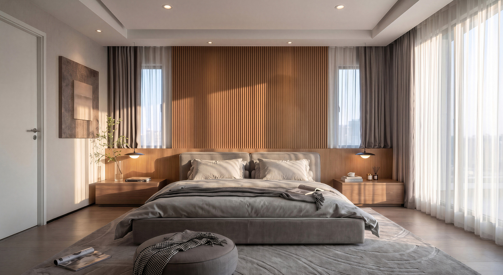

Interior Architecture & Spatial Design
10 Gilfillan St
INTERIOR DESIGN
A curated symphony of minimalist warmth, natural textures, and open-plan spatial harmony tailored for contemporary residential living.
Project Domain
High-End Residential
Style Language
Warm Minimalist / Panorama
Palette & Finish
Crimson & Earthy Tones

Master Bedroom Suite
Suite View

Ensuite Panorama Transition
Open Suite